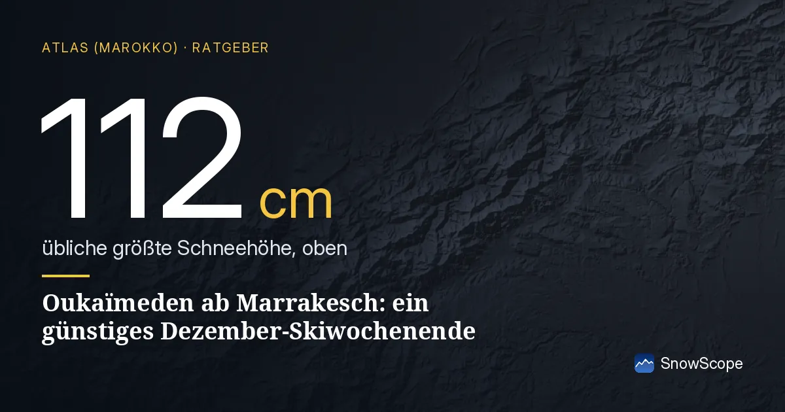

Oukaïmeden ab Marrakesch: ein günstiges Dezember-Skiwochenende
Oukaïmeden liegt 50 km Luftlinie von Marrakesch entfernt – nah genug für ein Wochenende, hoch genug um Schnee zu halten, wenn die Stadt schmort. Aber der Dezember ist ein Glücksspiel: Ein typischer Mitte-Dezember bringt nur 16 cm auf Mittelhöhe, also musst du frischem Schnee nachjagen, nicht dem Datum.
Die Live-Schneeprognose für Oukaimden ski resort in der SnowScope-AppSchneehöhen, Pulverschnee-Alarme und 3D-Karte, gratis.
Warum die Höhe zählt – und warum nicht
Das Skigebiet erstreckt sich von 2600 m an der Talstation bis 3258 m am Gipfel. Man würde erwarten, dass die Spitze viel schneeicher ist als die unteren Hänge, aber der Dezember im Atlas bricht diese Regel. Am 15. Dezember gibt es in einem typischen Winter 15 cm an der Talstation, 16 cm auf Mittelhöhe (2929 m) und 17 cm oben. Der Unterschied beträgt kaum einen Zentimeter.
Das passiert, weil Stürme viel mehr zählen als Meter. Schnee fällt auf einmal über den ganzen Berg, schmilzt dann zwischen den Ereignissen ab. Zu Saisonbeginn streifen Sonne und Wind die unteren Hänge schneller, daher bleiben Mittel- und Höhenzonen in der Tiefe ähnlich. Erst ab Januar schafft die Höhe einen echten Unterschied.

Die erste Dezember-Woche: Ein schlechtes Risiko
Am 1. Dezember hat die Mittelhöhe normalerweise 12 cm. Das klingt nach einem Anfang, aber 28 % der Winter sind an diesem Datum fast blank – unter 5 cm –. Nur 4 % der Winter haben in der ersten Dezemberwoche eine 50 cm Basis aufgebaut. Wenn du ein freies Wochenende im frühen Dezember hast, ist der Berg schön zum Wandern (bring warme Kleidung und Stiefel), aber Skifahren ist Lotterie.
Der erste bleibende Schnee kommt normalerweise um den 5. November, aber Novemberschnee verschwindet oft innerhalb von Tagen. Plane eine Dezemberreise nur, wenn du auf eine frische Sturmvorhersage warten und innerhalb von zwei oder drei Tagen losfahren kannst.

Mitte Dezember bis Weihnachten: Die Chancen steigen
Am 15. Dezember klettert die Schneehöhe auf Mittelhöhe auf 16 cm in einem durchschnittlichen Winter. Wichtiger: 43 % der Winter haben jetzt 25 cm oder mehr – doppelt so viel wie am 1. Dezember. Am Weihnachtstag sind 20 cm typisch, und 41 % der Winter überschreiten die 25-cm-Marke.
Trotzdem sind 20 % der Dezember am 15. noch fast blank. Nur 11 % der Winter haben Mitte Dezember auf Mittelhöhe eine anständige 50-cm-Basis. Der letzte Winter (2025–26) brach dieses Muster: 33 cm am 15. Dezember, dann ein starker Anstieg auf 78 cm bis Weihnachten. Das passiert etwa einmal in zehn Wintern.
Silvester: Dein sicherster Termin
Am 31. Dezember erreicht die typische Tiefe 24 cm auf Mittelhöhe, und die Hälfte aller Winter hat die 25-cm-Marke überschritten. Am Gipfel (3258 m) haben 20 % der Winter bis Jahresende 50 cm aufgebaut, verglichen mit nur 15 % auf Mittelhöhe. Wenn du einen Dezembentermin wählen musst, ist Silvester statistisch deine beste Chance.
Trotzdem ist keine Woche im Dezember garantiert. Das Muster über 46 Winter zeigt, dass nur 13 % der Jahre eine volle Woche mit durchschnittlichem Schnee von 50 cm oder mehr auf Mittelhöhe sehen. Ein einziges gutes Wochenende nach einem Sturm schlägt eine ganze Woche Hoffen.
Die lange Perspektive: Der Dezember hat sich nicht verändert
Über vier Jahrzehnte ist der Dezember unberechenbar geblieben. Der Dezemberschnee auf Mittelhöhe am 15. war in den Wintern 1980–81 bis 1994–95 durchschnittlich 14 cm und in den Wintern 2011–12 bis 2025–26 durchschnittlich 11 cm. In beiden Epochen erreichten etwa 40 % der Winter Mitte Monat 25 cm.
Im März verschiebt sich das Bild: Schnee erreicht dann seinen Höhepunkt, 53 cm typisch auf Mittelhöhe und 58 cm am Gipfel. Wenn der Dezember ausfällt, verschiebt deine Reise auf Ende Februar oder März bedeutet viel höhere Chancen auf tiefen Schnee.
Logistik und was du einpacken solltest
Lifttickets und Ausrüstungsverleih werden vor Ort geklärt – es gibt keinen offiziellen Online-Tarif. Frag Einheimische oder deine Unterkunft nach Preisen, bevor du dich festlegst. Transport von Marrakesch und eine Nacht in den Bergen machen normalerweise den Großteil deines Budgets aus.
Bring warme Schichten, Wanderstiefel (der Berg lohnt sich auch ohne Schnee zu besuchen) und eine Stirnlampe, wenn du nach Einbruch der Dunkelheit fährst. Die Bergstraße erfordert Vorsicht, besonders nach einem Sturm. Überprüfe die Straßenbedingungen vor der Abreise von Marrakesch und fahr langsam.
Tipps für Skifahrer
- Beobachte die Vorhersage auf Schnee im Atlas, dann fahre innerhalb von zwei oder drei Tagen nach einem Sturm los. Dieses einzelne Zeitfenster ist zuverlässiger als jedes Kalenderdatum.
- Wenn Anfang Dezember schneearm ist, verzweifle nicht: Wandere auf dem hohen Gelände, genieße die Aussicht und plane eine Rückkehr für Ende Februar oder März, wenn der Schnee am tiefsten ist.
- Bei der Fahrt von Marrakesch nach oben fahre früh los, um den Berg bei Tageslicht zu erreichen. Bergstraßen sind steil und eng, und die Sicht sinkt schnell nach Sonnenuntergang.
- Pack warme Kleidung ein, auch wenn der Schnee dünn ist: Der Wind ist über 2600 m stark, und du kannst schnell erfrieren, sobald die Sonne unter dem Kamm verschwindet.
- Bevor du Skier oder ein Snowboard mietest, frag den Preis vor Ort – es gibt keinen offiziellen Tarif zum Online-Vergleichen.
Zu diesen Zahlen
Die Schneehöhen der Skigebiete sind der meiste Schnee in den oberen Hängen am angegebenen Tag; es sind Schätzungen für eine Fläche, keine Messung an einem Punkt. Prognosen können sich ändern. Lies vor dem Freeriden immer den offiziellen Lawinenlagebericht.
Diesen Bericht zitieren
Für Forschung, Lehre oder Presse: Zahlen und Grafiken sind unter CC BY 4.0 mit dieser Quellenangabe frei nutzbar.
SnowScope (2026), Oukaïmeden ab Marrakesch: ein günstiges Dezember-Skiwochenende, https://snowscope.app/blog/de/2026/11/oukaimeden-depuis-marrakech-week-end-ski-decembre-budget.html, abgerufen am 2026-11-14
SnowScope (Atlas Labs). (2026, November 14). Oukaïmeden ab Marrakesch: ein günstiges Dezember-Skiwochenende. SnowScope snow reports. https://snowscope.app/blog/de/2026/11/oukaimeden-depuis-marrakech-week-end-ski-decembre-budget.html
BibTeX
@misc{snowscope2026oukaimedendepuismarrakec,
author = {{SnowScope (Atlas Labs)}},
title = {Oukaïmeden ab Marrakesch: ein günstiges Dezember-Skiwochenende},
year = {2026},
month = nov,
howpublished = {\url{https://snowscope.app/blog/de/2026/11/oukaimeden-depuis-marrakech-week-end-ski-decembre-budget.html}},
note = {Published 2026-11-14 13:29 UTC; accessed 2026-11-14}
}· CC BY 4.0 · Methoden, Daten und Werkzeuge →
Oukaimden ski resort: Schnee und Temperatur nach Höhe, dieser Winter vs letzter (Werkzeuge) →
Oukaimden ski resort folgen
Gratis: eine Nachricht, wenn Neuschnee kommt, und jeden Morgen die Vorhersage.
Weitere Schneeberichte

Am 12. November liegt noch kein Schnee auf Oukaïmeden. Die Gipfel des Atlas sind kahl; die Wintersaison erreicht ihren Höhepunkt normalerweise im März mit 58 cm an der Spitze.

Der Dezember bringt nur 18 cm typische Schneehöhe auf Mittelhang in Oukaimeden, gegenüber 53 cm im März. Die Frühjahrsaison ist dünn, aber möglich. Daten 13. November 2026.